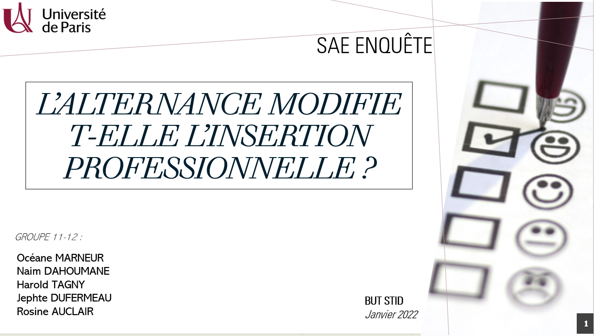
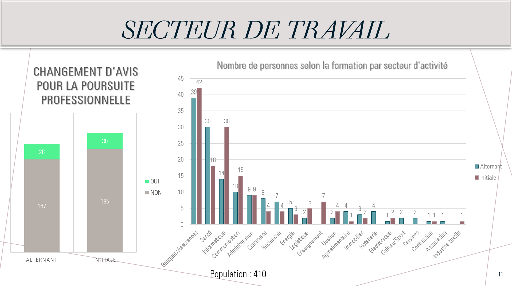
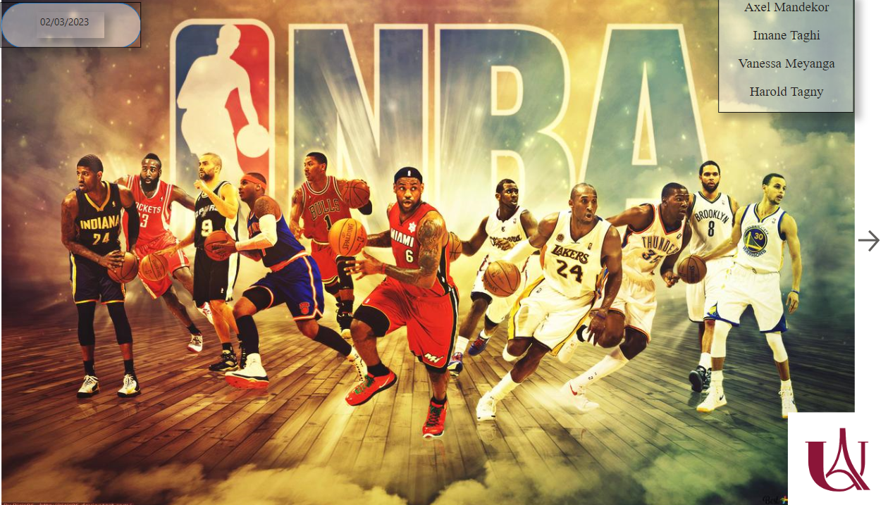
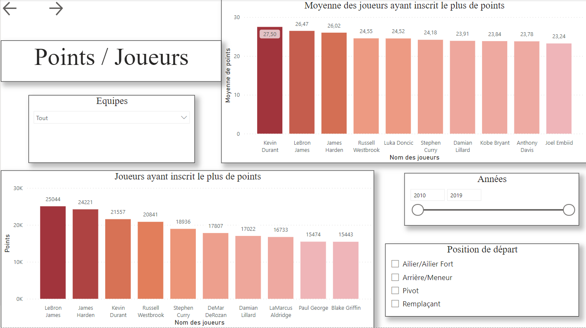
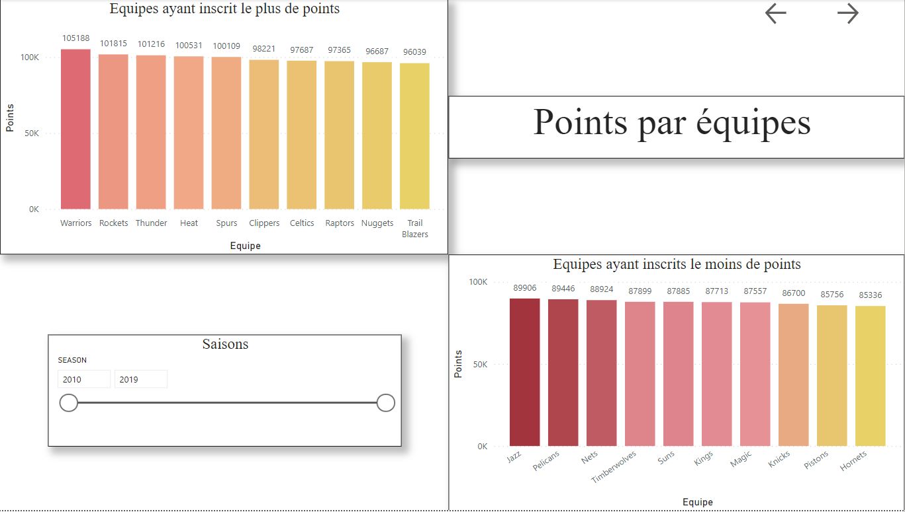
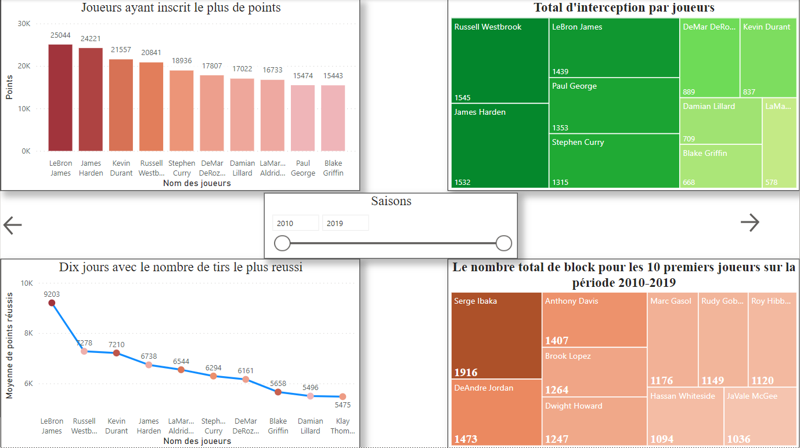

Bonjour, je m'appelle Harold👋🏾
Bienvenu(e) sur mon PortFolio dans lequel je présent mes projets ainsi que la passion que j'ai développée pour la data. Les données sont le nouvel or de la génération dans laquelle on vit aujourd'hui, et c'est une façon de se faciliter la vie de bien des manières. Commençons par les projets effectués lors de mon parcours en BUT Statistiques & Informatique Décisionnelle (aujourd'hui renommé Sciences des Données - SD).
Principaux projets réalisés en BUT SD;
Dans ce questionnaire, il était question de traîter les informations liées aux anciens étudiants.
Pour cela, il a d'abord fallu élaborer un questionnaire concernant par exemple leurs poursuites d'études ou bien leurs métiers. Un excellent
exercice afin de mieux se situer quand aux poursuites d'étude.
Ce projet m'a permis de mettre un pied dans la donnée rapidement (car il a eu lieu au début de la formation) et de comprendre comment est-ce que ça fonctionnait.
Intéressant et motivé, le projet m'a permis de développer des compétences excel tout d'abord mais également de gestion de base de donnée et de travail d'équipe également. C'est également grâce à ce projet que j'ai voulu effectuer la formation en alternance en seconde année.
Télécharger le questionnaire

Pour exemple, vous retrouverez ci-joint le questionnaire qui a pu être réaliser pour l'étude :
Présentation des résulats :
Au fil de cette étude dont nous avons finalement obtenu 626 individus répondants pour 410 individus sélectionnés et étudiers pour des raisons de complétudes du questionnaire, nous avons pu effectuer plusieurs remarques.
Pour la partie Univariée :
Tout d'abord, la majorité des répondants se situait dans la tranche d'âge de 20 à 40 ans (94,64% de notre population). La plupart d'entre eux (81,44%) ont obtenu leur premier emploi avant la fin de leurs études ou dans les trois mois suivant, surtout dans les secteurs des Banques & Assurances, de la Santé ou de l'Informatique, regroupant 54% de la population. Les autres répondants se répartissent dans divers autres domaines tels que la communication ou la recherche.
La question qui a suscité le plus d'intérêt concernait la rémunération, qui se situait généralement entre 1200 et 2400 € pour 81,45% des répondants. Pour 63% de la population, cette rémunération a évolué par la suite, avec pour la plupart des 37% restants une stagnation plutôt qu'une diminution de salaire.
Pour la partie Bivariée (où on va comparer les personnes ayant effectuer une alternance ou non) :

La partie bivariée nous en apprend davantage sur les deux parcours. On remarque que peu importe le parcours choisi, que ce soit en alternance ou en initial, la répartition des classes modales est équivalente (entre 20 et 30 ans). Nous avons également dans notre base 52% de personnes en initial et 48% en alternance. Pour la plupart, que ce soit en initial ou en alternance, les individus ont intégré de grandes entreprises, soit de plus de 5000 salariés ou entre 250 et 4999 salariés. J'ai également pu confirmer que la formation en Statistique offre très peu de chômage car la plupart sont engagés avant la fin de leurs études. Comme on peut le constater sur le graphique ci-dessus, qui a été converti en numérique afin de pouvoir observer les proportions, les étudiants en alternance se dirigent beaucoup plus vers la banque et l'assurance ainsi que la Santé et l'Informatique. On remarque alors que la Communication est également priorisée par les étudiants en Initial. Globalement, peu de répondants ont changé d'avis concernant leurs poursuites d'études ou leur vie professionnelle.
Concernant la conclusion du projet :
Pour conclure le projet, nous avons pu observer différentes conclusions à travers les données :
- Le salaire dépend de la formation de base (Alternance ou Initial).
- L'évolution salariale dépend de la formation de base.
- L'évolution salariale dépend du niveau d'études.
- La formation de base n'influe pas sur la vitesse de recrutement.
- La formation n'a pas d'influence sur le nombre de postes occupés.
Pour la partie Bivariée (où on va comparer les personnes ayant effectuer une alternance ou non) :
Concernant la conclusion du projet :
Pour conclure le projet, nous avons pu observer différentes conclusions à travers les données :
- Le salaire dépend de la formation de base (Alternance ou Initial).
- L'évolution salariale dépend de la formation de base.
- L'évolution salariale dépend du niveau d'études.
- La formation de base n'influe pas sur la vitesse de recrutement.
- La formation n'a pas d'influence sur le nombre de postes occupés.
Dates : Septembre 2021 - Janvier 2022
Lors de ce projet, il fallait choisir une base de donnée de notre choix afin d'en faire une présentation finale.
Après avoir choisi notre base de donnée sur le BasketBall, nous avions 4 différentes bases toutes sur le sujet du BasketBall.
Une base contenant les détails des matchs sur les saisons de 2003 à 2019, une base contenant les statistiques des équipes sur ces matchs,
une autre contenant les équipes ainsi que les différentes informations sur celles-ci (stadium, capacité, nom de l'équipe, propriétaire) et
enfin une dernière base contenant les joueurs ainsi que les statistiques sur chaque matchs qu'ils ont jouer.
Ce projet m'a permis de prendre plus de recul sur les choix ainsi que la création des bases de données relationnelles.
J'ai également pu améliorer mes DataVisualisations à partir de là.

Grace à ce projet, j'ai effectué différentes intégrations à travers les bases que nous avons pu choisir. L'objectif du projet était d'effectuer un tableau interactif en fonction des filtres que nous avions pu effectuer entre les différentes performances des joueurs. Ainsi, on a pu séparer le projet avec une partie Offensive, une partie Défensive, une partie par équipe ainsi qu'une partie Turn Over qui correspondent aux équipes qui prennent le plus et le moins de panier en contre direct.
En observant la répartition, nous avons essayer d'estimer les meilleurs joueurs sur notre période (de 2010 à 2019). Il s'avère que bien souvent, les joueurs les plus décisifs soient dans notre étude Lebron James ainsi que Stephen Curry. Viennent ensuite des joueurs comme Russell Westbrook ou bien encore Kevin Durant.
A travers ce projet, on a pu voir comment mettre en lien des bases de données qui bien que sur le même sujet n'étaient pas reliées directement au début.
Vous pouvez retrouver l'étude sous le lien ci-dessous :
Télécharger l'étude sur Power BI
Points par joueurs :
Points par équipe :
Conclusion :
Vous pouvez retrouver l'étude sous le lien ci-dessous :
Dates : Janvier 2023 - Mars 2023
Après avoir effectuer différents projets en cours, j'ai donc décidé de choisir d'aller en alternance. J'ai eu plusieurs offres dont une à Pro BTP où je pensais pouvoir me développer que ce soit au niveau du codage ou bien au niveau de la manière de travailler.
Je n'ai pas été déçu au niveau des compétences ; je pense que j'ai pu améliorer mon niveau en codage notamment en SAS/SQL car ce sont les langages que nous utilisions le plus en entreprise.
J'ai également pu développer mon esprit d'équipe bien qu'il y ait eu différents litiges. Avec discussions et efforts, nous sommes arrivés pour le moment à travailler en cohésion.
Aujourd'hui, je compte donc continuer sur ma lancée et terminer convenablement mon alternance.
Malgré le fait que je sois en alternance, je ne me suis pas laissé décourager par le rythme qui peut parfois être soutenu mais j’ai persévérer afin de pouvoir la formation en Sciences des Données et ainsi pouvoir mêler l'apprentissage pratique et scolaire.
Dates : Septembre 2022 - Septembre 2024
Dans ce projet de Scoring, l'objectif était de cibler parmi une base de données de plus de 20 000 personnes, 2000 clients susceptibles de résilier leurs contrats dans les 3 mois suivant la prise d'image de cette base.
Le projet était divisé en plusieurs étapes avec différentes méthodes de ciblage :
Télécharger les consignes du projet
Télécharger la base de décembre 2022
Télécharger la base de mars 2023
Le but était de déterminer à partir de la base de donnée de 2022, les personnes susceptibles de résilier leurs contrats en Mars 2023.
Ce projet m'a particulièrement intéressé car il présentait une problématique métier concrète, visant à identifier les individus susceptibles de résilier leur contrat. De plus, il était fascinant de voir comment la précision du scoring s'améliorait au fur et à mesure des différentes étapes.
Ciblage aléatoire : Pour la première livraison, il s'agissait d'effectuer un ciblage aléatoire en sélectionnant des personnes au hasard.
Ciblage métier : Pour la deuxième livraison, le ciblage s'est basé sur des variables spécifiques liées au métier, en tenant compte de certaines caractéristiques dans la base de restitution.
Méthodes descriptives : Pour la troisième livraison, l'utilisation de méthodes descriptives était autorisée, mais les modèles et les méthodes de classification automatisés étaient exclus.
Régression logistique : Pour la quatrième livraison, seule une régression logistique était autorisée comme méthode de classification.
Libre choix : Pour la dernière livraison, les méthodes étaient libres. J'ai choisi d'expérimenter avec la méthode Bootstrap, car selon mes recherches, elle offre une classification efficace.
À travers ces différentes étapes et méthodes de scoring, nous avons constaté une amélioration significative de la précision. Nous sommes passés de la sélection de 300 individus (méthode aléatoire) à près de 1700 individus (sur 2000) pour la dernière méthode de classification.
Pour mener à bien ce projet, j'ai utilisé les bases de données de décembre 2022 et mars 2023. L'objectif était de déterminer à partir de la base de données de 2022, les personnes susceptibles de résilier leurs contrats en mars 2023.
Télécharger la base de mars 2023
Dates : Octobre 2023 - Décembre 2023
L'anayse en essai clinique a été un projet effectué avec comme objectif proncipal l'évaluation de l'impact du Voxelotor sur les niveaux d'hémoglobines par rapport à un placebo. D'autres objectifs secondaires ont été abordés tels que la mesure clinique d'hémolyse et les crises vaso-occlusives à long terme.
De cette étude, on a pu conclure que globalement l'efficacité du Voxelotor sur les patients étant atteints de drépanocytose concernait l'augmentation du taux d'hémoglobine. Par la suite nous avons continuer cette étude en créant des sous-groupes afin de remarque si il y avait des différenciations en fonction des sous-groupes (Ex : entre l'âge adolescent et adulte, antécédents de crises cavo-occlusives). En conclusion, le Voxelotor est significativement efficace dans l'augmentation du taux d'hémoglobines chez les patients atteints de drépanocytose et cela indépendament de l'âge, de l'utilisation antérieure d'hydroxurée et du nombre d'antécédents de crises vaso-occlusives.
Dates : Décembre 2023 - Février 2024
Lors de ce projet, il était question de mettre en avant la manière dont on a effectuer l'étude de données en expliquant en détail comment on s'y est pris.
Dates : Fevrier 2024 - Mars 2024